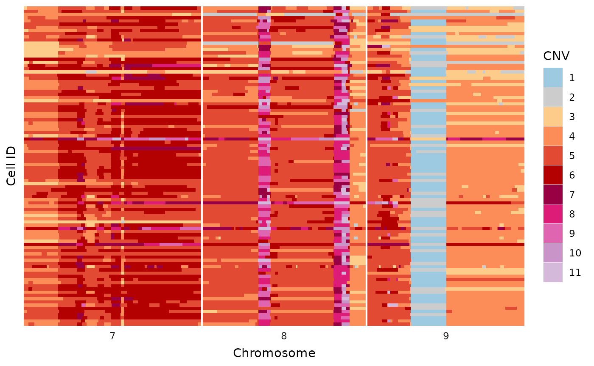

Various Functions
useful_functions.RmdVarious Functions dlptools
Masking Bad Regions
Masking regions that are bad for DLP, mostly the consequence of low mappability.
# assuming some sort of reads or segments DF with: chr, start, end
ex_reads <- vroom::vroom("data/example_reads.tsv.gz")
ex_reads <- dlptools::mark_mask_regions(ex_reads)
# adds a boolean `mask` column
ex_reads |>
dplyr::select(cell_id, chr, start, end, mask) |>
dplyr::slice_head(n = 5)
#> # A tibble: 5 × 5
#> cell_id chr start end mask
#> <chr> <chr> <dbl> <dbl> <lgl>
#> 1 AT23998-A138956A-R03-C34 1 1 500000 FALSE
#> 2 AT23998-A138956A-R03-C34 1 500001 1000000 FALSE
#> 3 AT23998-A138956A-R03-C34 1 1000001 1500000 FALSE
#> 4 AT23998-A138956A-R03-C34 1 1500001 2000000 FALSE
#> 5 AT23998-A138956A-R03-C34 1 2000001 2500000 FALSEThe default masking file is one constructed by Daniel Lai, and can be viewed at the package source or by loading:
vroom::vroom(system.file("extdata", "blacklist_2023.07.17.txt", package = "dlptools"))
#> # A tibble: 26 × 4
#> seqnames start end width
#> <chr> <dbl> <dbl> <dbl>
#> 1 1 120500001 148000000 27500000
#> 2 2 87000001 95500000 8500000
#> 3 3 90500001 93500000 3000000
#> 4 4 49000001 53000000 4000000
#> 5 5 46000001 49500000 3500000
#> 6 6 57000001 62500000 5500000
#> 7 7 55500001 66000000 10500000
#> 8 8 43500001 48000000 4500000
#> 9 9 38500001 71000000 32500000
#> 10 10 38500001 52000000 13500000
#> # ℹ 16 more rowsMarking Centromere Locations
Centromeres are problematic for DLP data, the state calls are often inflated and highly inconsistent between adjacent bins. It’s a messy region that we often want to omit. The default masking file (above) pretty much captures these regions, but sometimes we may want to be more specific.
Alternatively, sometimes we want to specify windows around centromeres to include in filtering too.
The files loaded to mark centromeres come from UCSC cytoband files of hg19 and hg38 releases.
# easiest way is to just explictly mark whether bins are in centromeres
dlptools::mark_bins_overlapping_centromeres(
reads_df = ex_reads,
padding = 3e6, # e.g., specifying 3 Mb on each side of centromere
# default padding is 0
version = "hg19", # default, don't neeed to specify. Alternative is "hg38"
) |>
dplyr::count(cell_id, overlaps_centro) |>
dplyr::slice_head(n = 6)
#> # A tibble: 6 × 3
#> cell_id overlaps_centro n
#> <chr> <lgl> <int>
#> 1 AT23998-A138956A-R03-C34 FALSE 5685
#> 2 AT23998-A138956A-R03-C34 TRUE 521
#> 3 AT23998-A138956A-R04-C58 FALSE 5685
#> 4 AT23998-A138956A-R04-C58 TRUE 521
#> 5 AT23998-A138956A-R05-C42 FALSE 5685
#> 6 AT23998-A138956A-R05-C42 TRUE 521Alternatively, this can be done in parts:
# e.g., just adding the centromere information by chromosome
dlptools::add_centromere_locations(
reads_df = ex_reads,
version = "hg19" # default, don't need to specify. Alternative is "hg38"
) |>
dplyr::select(
cell_id, chr, centro_start, centro_end, start_p, end_p, start_q, end_q
)
#> # A tibble: 620,600 × 8
#> cell_id chr centro_start centro_end start_p end_p start_q end_q
#> <chr> <chr> <dbl> <dbl> <dbl> <dbl> <dbl> <dbl>
#> 1 AT23998-A138956A… 1 121500000 128900000 1.22e8 1.25e8 1.25e8 1.29e8
#> 2 AT23998-A138956A… 1 121500000 128900000 1.22e8 1.25e8 1.25e8 1.29e8
#> 3 AT23998-A138956A… 1 121500000 128900000 1.22e8 1.25e8 1.25e8 1.29e8
#> 4 AT23998-A138956A… 1 121500000 128900000 1.22e8 1.25e8 1.25e8 1.29e8
#> 5 AT23998-A138956A… 1 121500000 128900000 1.22e8 1.25e8 1.25e8 1.29e8
#> 6 AT23998-A138956A… 1 121500000 128900000 1.22e8 1.25e8 1.25e8 1.29e8
#> 7 AT23998-A138956A… 1 121500000 128900000 1.22e8 1.25e8 1.25e8 1.29e8
#> 8 AT23998-A138956A… 1 121500000 128900000 1.22e8 1.25e8 1.25e8 1.29e8
#> 9 AT23998-A138956A… 1 121500000 128900000 1.22e8 1.25e8 1.25e8 1.29e8
#> 10 AT23998-A138956A… 1 121500000 128900000 1.22e8 1.25e8 1.25e8 1.29e8
#> # ℹ 620,590 more rows
# internally this function is used to retrieve chromosome locations
# dlptools::load_ucsg_cenrtomeres()Information From Cell IDs
This is assuming our standard DLP cell ids, e.g.,
AT23998-A138956A-R03-C34.
# single cell id
dlptools::sample_from_cell("AT23998-A138956A-R03-C34")
#> [1] "AT23998"
# single library ID
dlptools::library_from_cell("AT23998-A138956A-R03-C34")
#> [1] "A138956A"
# Also a generic function for either
# dlptools::pull_info_from_cell_id("AT23998-A138956A-R03-C34", 'sample')
# dlptools::pull_info_from_cell_id("AT23998-A138956A-R03-C34", 'library')
# multiple cell ids:
dlptools::sample_from_cell(ex_reads$cell_id[1:5])
#> [1] "AT23998" "AT23998" "AT23998" "AT23998" "AT23998"
# or library
dlptools::library_from_cell(ex_reads$cell_id[1:5])
#> [1] "A138956A" "A138956A" "A138956A" "A138956A" "A138956A"
# more useful it using it on your reads data frame
# extracting sample id and library id and inserting into the dataframe
ex_reads |>
dplyr::mutate(
sample_id = dlptools::sample_from_cell(cell_id),
library_id = dlptools::library_from_cell(cell_id)
) |>
dplyr::slice_sample(n = 5)
#> # A tibble: 5 × 14
#> cell_id chr start end state gc ideal map reads valid
#> <chr> <chr> <dbl> <dbl> <dbl> <dbl> <lgl> <dbl> <dbl> <lgl>
#> 1 AT23998-A138956A-R17-… 11 1.28e8 1.28e8 4 0.409 TRUE 0.997 789 TRUE
#> 2 AT23998-A138956A-R22-… 4 1.14e8 1.14e8 4 0.392 TRUE 0.998 573 TRUE
#> 3 AT23998-A138956A-R17-… 4 3.85e7 3.90e7 3 0.419 TRUE 0.999 168 TRUE
#> 4 AT23998-A138956A-R10-… 8 7.45e7 7.5 e7 4 0.401 TRUE 0.998 616 TRUE
#> 5 AT28335-A143820B-R46-… 21 2.90e7 2.95e7 6 0.361 TRUE 0.995 128 TRUE
#> # ℹ 4 more variables: is_low_mappability <lgl>, mask <lgl>, sample_id <chr>,
#> # library_id <chr>Inferring Missing Bin Data
In the course of DLP analyses, we often filter bins, e.g., the masking regions explained above, bins within centromeres, bins with poor mappability or GC correction. Also, some methods we use (Signals, medicc), might drop data they don’t like.
But that leaves gaps in the data, and limits the length of segments that can be inferred.
While the relative merit can be debated, one possible solution to this is to fill in the missing state data from an adjacent bin. I.e., if the bin on chromosome 1 from 1.5-2.0Mb is missing, use the state data from 1.0-1.5Mb to fill in the missing data for that bin.
These functions will help you do that.
First lets set up some filtered data:
raw_reads <- vroom::vroom("data/example_reads.tsv.gz")
filt_reads <- raw_reads |>
dlptools::mark_mask_regions() |>
dlptools::mark_bins_overlapping_centromeres(padding = 3e6) |>
dplyr::filter(
gc != -1 & map > 0.99 & !overlaps_centro & !mask
)
tibble::tibble(
raw_bins = dplyr::distinct(raw_reads, chr, start, end) |> nrow(),
filtered_bins = dplyr::distinct(filt_reads, chr, start, end) |> nrow()
)
#> # A tibble: 1 × 2
#> raw_bins filtered_bins
#> <int> <int>
#> 1 6206 4185Then we can insert missing bins. This will create NAs for all data columns except cell_id, chr, start, end, unless otherwise specified. Only cell level data should be specified to be carried through.
# optional e.g., we can add some other fake cell level meta data to carry
# through for missing bins
filt_reads$library <- "fake_library"
filt_with_missing <- dlptools::add_missing_bins_for_cells(
filt_reads,
version = "hg19", # default, don't need to specify
bin_size = 5e5, # default, don't need to specify
# OPTIONAL! can also specify other columns to carry through for cells
cell_metadata_cols = c("library")
)
filt_with_missing |>
dplyr::relocate(library, cell_id) |>
dplyr::slice_head(n = 10)
#> # A tibble: 10 × 22
#> library cell_id chr start end state gc ideal map reads valid
#> <chr> <chr> <chr> <dbl> <dbl> <dbl> <dbl> <lgl> <dbl> <dbl> <lgl>
#> 1 fake_libra… AT2399… 1 1 e0 5 e5 NA NA NA NA NA NA
#> 2 fake_libra… AT2399… 1 5.00e5 1 e6 NA NA NA NA NA NA
#> 3 fake_libra… AT2399… 1 1.00e6 1.5 e6 NA NA NA NA NA NA
#> 4 fake_libra… AT2399… 1 1.50e6 2 e6 NA NA NA NA NA NA
#> 5 fake_libra… AT2399… 1 2.00e6 2.5 e6 4 0.595 TRUE 0.997 385 TRUE
#> 6 fake_libra… AT2399… 1 2.50e6 3 e6 NA NA NA NA NA NA
#> 7 fake_libra… AT2399… 1 3.00e6 3.5 e6 4 0.585 TRUE 0.997 320 TRUE
#> 8 fake_libra… AT2399… 1 3.50e6 4 e6 NA NA NA NA NA NA
#> 9 fake_libra… AT2399… 1 4.00e6 4.50e6 4 0.483 TRUE 0.996 397 TRUE
#> 10 fake_libra… AT2399… 1 4.50e6 5 e6 4 0.482 TRUE 0.999 280 TRUE
#> # ℹ 11 more variables: is_low_mappability <lgl>, mask <lgl>,
#> # centro_start <dbl>, centro_end <dbl>, centro_span <dbl>, start_p <dbl>,
#> # start_q <dbl>, end_p <dbl>, end_q <dbl>, centromere_padding <dbl>,
#> # overlaps_centro <lgl>NAs are inserted for missing bins.
Then we can actually fill in those bins with their neighbours, and specify any of the columns you want filled:
dlptools::fill_state_from_neighbours(
filt_with_missing,
cols_to_fill = c("state", "gc") # default is "state", don't need to specify
) |>
dplyr::slice_head(n = 10)
#> # A tibble: 10 × 22
#> cell_id chr start end state gc ideal map reads valid
#> <chr> <chr> <dbl> <dbl> <dbl> <dbl> <lgl> <dbl> <dbl> <lgl>
#> 1 AT23998-A138956A-R0… 1 1 e0 5 e5 4 0.595 NA NA NA NA
#> 2 AT23998-A138956A-R0… 1 5.00e5 1 e6 4 0.595 NA NA NA NA
#> 3 AT23998-A138956A-R0… 1 1.00e6 1.5 e6 4 0.595 NA NA NA NA
#> 4 AT23998-A138956A-R0… 1 1.50e6 2 e6 4 0.595 NA NA NA NA
#> 5 AT23998-A138956A-R0… 1 2.00e6 2.5 e6 4 0.595 TRUE 0.997 385 TRUE
#> 6 AT23998-A138956A-R0… 1 2.50e6 3 e6 4 0.595 NA NA NA NA
#> 7 AT23998-A138956A-R0… 1 3.00e6 3.5 e6 4 0.585 TRUE 0.997 320 TRUE
#> 8 AT23998-A138956A-R0… 1 3.50e6 4 e6 4 0.585 NA NA NA NA
#> 9 AT23998-A138956A-R0… 1 4.00e6 4.50e6 4 0.483 TRUE 0.996 397 TRUE
#> 10 AT23998-A138956A-R0… 1 4.50e6 5 e6 4 0.482 TRUE 0.999 280 TRUE
#> # ℹ 12 more variables: is_low_mappability <lgl>, mask <lgl>,
#> # centro_start <dbl>, centro_end <dbl>, centro_span <dbl>, start_p <dbl>,
#> # start_q <dbl>, end_p <dbl>, end_q <dbl>, centromere_padding <dbl>,
#> # overlaps_centro <lgl>, library <chr>Of course, it could all be done in a pipe:
raw_reads |>
dlptools::mark_mask_regions() |>
dlptools::mark_bins_overlapping_centromeres(padding = 3e6) |>
dplyr::filter(
gc != -1 & map > 0.99 & !overlaps_centro & !mask
) |>
dlptools::add_missing_bins_for_cells() |>
dlptools::fill_state_from_neighbours()Functions being used internally include:
create_expected_bins(
version = "hg19", # default, or hg38
bin_size = 5e5 # default
) |>
dplyr::slice_head(n = 5)
#> # A tibble: 5 × 3
#> chr start end
#> <chr> <dbl> <dbl>
#> 1 1 1 500000
#> 2 1 500001 1000000
#> 3 1 1000001 1500000
#> 4 1 1500001 2000000
#> 5 1 2000001 2500000or expanding any integer into bins:
dlptools::expand_length_to_bins(10, bin_size = 5)
#> # A tibble: 2 × 2
#> start end
#> <dbl> <dbl>
#> 1 1 5
#> 2 6 10And chromosome lengths used are coming from USCS
chromInfo files:
dlptools::load_chrom_info_file(
version = "hg19" # default, or "hg38"
) |>
dplyr::slice_head(n = 5)
#> # A tibble: 5 × 3
#> chr total_length misc
#> <chr> <dbl> <chr>
#> 1 1 249250621 /gbdb/hg19/hg19.2bit
#> 2 2 243199373 /gbdb/hg19/hg19.2bit
#> 3 3 198022430 /gbdb/hg19/hg19.2bit
#> 4 4 191154276 /gbdb/hg19/hg19.2bit
#> 5 5 180915260 /gbdb/hg19/hg19.2bitReads to Segments
Grouping read bins into contiguous segments (e.g. post filtering read bins, etc.).
segs_filt <- dlptools::reads_to_segs(ex_reads)
# this is now runs of adjacent read bins with identical states collapesed
# into a single bin. Of course, bins are no longer of equal size.
segs_filt[1:4, ]
#> # A tibble: 4 × 5
#> # Groups: cell_id, chr [1]
#> cell_id chr start end state
#> <chr> <chr> <dbl> <dbl> <dbl>
#> 1 AT23998-A138956A-R03-C34 1 1 41000000 4
#> 2 AT23998-A138956A-R03-C34 1 41000001 49500000 5
#> 3 AT23998-A138956A-R03-C34 1 49500001 55000000 7
#> 4 AT23998-A138956A-R03-C34 1 55000001 58500000 5warning: this function will leave some unexpected gaps when dataframes have been filtered and bins removed. Inspect carfully if you have dropped bins from your dataframe.
Long to Wide Reads (or segments)
Some functions require read state information to be in wide format vs long, with cell_ids as rows and chr_start_end as columns, and the states as cells.
ex_reads_w <- dlptools::convert_long_reads_to_wide(ex_reads)
ex_reads_w[1:4, 1:4]
#> # A tibble: 4 × 4
#> cell_id `1_1_500000` `1_500001_1000000` `1_1000001_1500000`
#> <chr> <dbl> <dbl> <dbl>
#> 1 AT23998-A138956A-R03-C34 4 4 4
#> 2 AT23998-A138956A-R04-C58 4 4 4
#> 3 AT23998-A138956A-R05-C42 5 5 5
#> 4 AT23998-A138956A-R05-C64 4 4 4Basic Plots
This plot is a simplified alternative to the methods described in the heatmaps vignette. There are no additions, like trees and annotations, but works for a variety of quick inspections.
dlptools::basic_tile_plot(
# just filtering to make the plot smaller for this demonstration
dplyr::filter(ex_reads, chr %in% c(7:9))
)
To help with plotting, a variety of commonly use color palettes are available:
# standard state colors
dlptools::CNV_COLOURS
#> 0 1 2 3 4 5 6 7
#> "#3182BD" "#9ECAE1" "#CCCCCC" "#FDCC8A" "#FC8D59" "#E34A33" "#B30000" "#980043"
#> 8 9 10 11+ 11
#> "#DD1C77" "#DF65B0" "#C994C7" "#D4B9DA" "#D4B9DA"
# typically used allele specific colors
dlptools::ASCN_COLORS
#> 0|0 1|0 1|1 2|0 2|1 3|0 2|2 3|1
#> "#3182BD" "#9ECAE1" "#CCCCCC" "#666666" "#FDCC8A" "#FEE2BC" "#FC8D59" "#FDC1A4"
#> 4|0 5 6 7 8 9 10 11
#> "#FB590E" "#E34A33" "#B30000" "#980043" "#DD1C77" "#DF65B0" "#C994C7" "#D4B9DA"
#> 11+
#> "#D4B9DA"
# typically used phase colors
dlptools::ASCN_PHASE_COLORS
#> A-Hom B-Hom A-Gained B-Gained Balanced
#> "#56941E" "#471871" "#94C773" "#7B52AE" "#d5d5d4"
# typically BAF scale is a circlize::colorRamp2 spanning
# standard green-grey-purple used for ASCN colors
# dlptools::BAF_COLORSData Importing
If you’ve followed a semi-standard approach for downloading such as this:
# bash
cd where/to/save/my_dlp/
ticket="SC-8382"
azcopy copy https://singlecellresults.blob.core.windows.net/results/${ticket}/results/annotation/ ${ticket} --recursive
azcopy copy https://singlecellresults.blob.core.windows.net/results/${ticket}/results/hmmcopy/ ${ticket} --recursivewhich produces a directory with this sort of structure:
├── SC-8382
│ ├── annotation
│ │ ├── metrics.csv.gz
│ │ ├── #[...other files ...]
│ └── hmmcopy
│ │ ├── #[...other files ...]
│ ├── reads.csv.gz
│ ├── segments.csv.gz
├── SC-8408
│ ├── annotation
│ │ ├── metrics.csv.gz
│ │ ├── #[...other files ...]
│ └── hmmcopy
│ │ ├── #[...other files ...]
│ ├── reads.csv.gz
│ ├── segments.csv.gz
├── SC-8650then there are some functions that can help with loading data from these into a consistent dataframe:
dlp_dir <- "/where/to/save/my_dlp/"
# loading metrics
metrics <- dlptools::import_dlp_files(dlp_dir, "metrics")
# loading reads
reads_df <- dlptools::import_dlp_files(dlp_dir, "reads")
# loading segments...but generally this isn't a great idea
# segs_df <- dlptools::import_dlp_files(dlp_dir, "segments")Other
Phylogenetic trees made by Stika take some formatting before they can be plotted:
dlptools::format_sitka_tree()this function drops locus tips and removes the
cell_ part of cell id names on tips. This way, the trees
can be aligned to cell ids in the heatmaps.